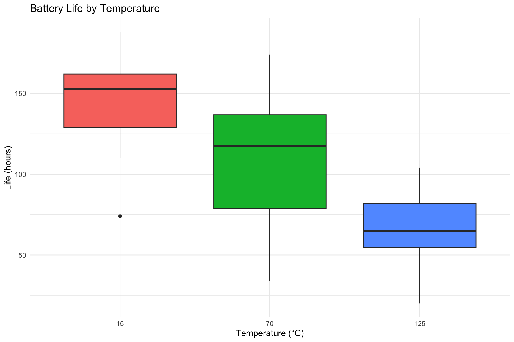
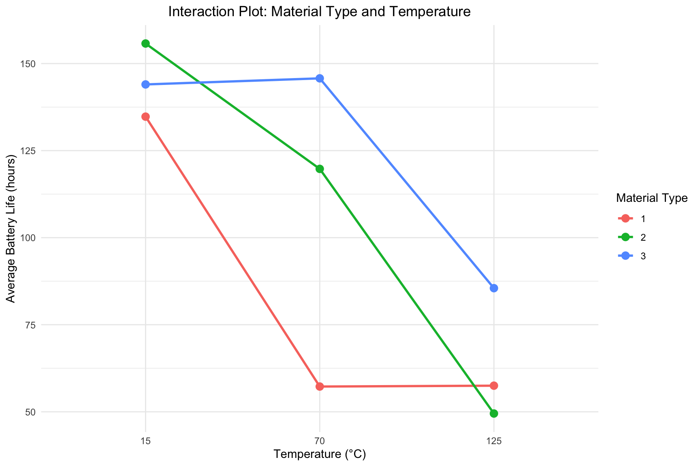
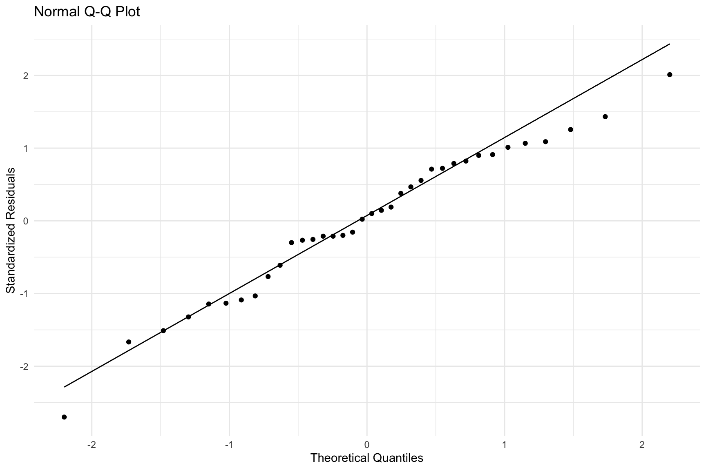

This analysis explores data from a two-factor factorial experiment designed to assess the lifespan of a battery. The experiment investigates two factors: material type (with 3 levels) and operating temperature (with 3 levels: 15°C, 70°C, and 125°C). The primary goal is to understand not only how each factor individually affects battery life but, more importantly, whether the effect of temperature depends on the material type used. This combined effect is known as an interaction.
8.2 Data Setup and Preparation
First, we organize the raw data into a structured data.frame. This is a best practice in R that makes the data easier to manage and the code more readable. We create columns for the response variable life and the two factors, material and temperature, ensuring they are treated as categorical variables (factors) for the analysis.
Code
## Response variable: battery lifelife <-c(130,155,74,180, 34,40,80,75, 20,70,82,58,150,188,159,126, 136,122,106,115, 25,70,58,45,138,110,168,160, 174,120,150,139, 96,104,82,60)## Create the data framebattery_df <-data.frame(life = life,material =factor(rep(1:3, each =12)),temperature =factor(rep(rep(c(15, 70, 125), each =4), 3)))## Preview the databattery_df
8.3 Exploratory Data Analysis and Visualization
Before fitting a formal model, we visualize the data to get an intuition for the relationships between the factors and the response.
8.4 Boxplots of Main Effects
Boxplots are excellent for examining the distribution of battery life for each level of our factors independently. This gives us a preliminary look at the main effects—the individual impact of material type and temperature.
Code
library(ggplot2)## Boxplot for Material Typeggplot(battery_df, aes(x = material, y = life, fill = material)) +geom_boxplot() +labs(title ="Battery Life by Material Type", x ="Material Type", y ="Life (hours)") +theme_minimal() +theme(legend.position ="none")## Boxplot for Temperatureggplot(battery_df, aes(x = temperature, y = life, fill = temperature)) +geom_boxplot() +labs(title ="Battery Life by Temperature", x ="Temperature (°C)", y ="Life (hours)") +theme_minimal() +theme(legend.position ="none")
Distribution of Battery Life by Material and Temperature.

Distribution of Battery Life by Material and Temperature.
8.5 Interaction Plot
The most crucial plot for a factorial experiment is the interaction plot. It displays the mean battery life for each combination of material and temperature. If the lines are parallel, it suggests there is no interaction. If the lines are not parallel (i.e., they cross or diverge), it indicates that the effect of temperature on battery life is different for each material type, signaling a likely interaction.
Code
ggplot(battery_df, aes(x = temperature, y = life, group = material, color = material)) +stat_summary(fun = mean, geom ="line", size =1) +stat_summary(fun = mean, geom ="point", size =3) +labs(title ="Interaction Plot: Material Type and Temperature",x ="Temperature (°C)",y ="Average Battery Life (hours)",color ="Material Type" ) +theme_minimal() +theme(plot.title =element_text(hjust =0.5))

Interaction between Material Type and Temperature.
The non-parallel lines in the plot strongly suggest that a significant interaction effect is present. Specifically, the performance of Material 3 drops less dramatically with increasing temperature compared to Materials 1 and 2.
8.6 Model Fitting and Analysis of Variance (ANOVA)
We now fit a linear model to formally test the significance of the main effects and the interaction term. The model life ~ material * temperature is shorthand for life ~ material + temperature + material:temperature. We use a sum-to-zero contrast (contr.sum) for balanced interpretation of the effects. The ANOVA table will tell us if the variation caused by our factors is statistically significant compared to the random variation in the data.
Code
## Fit the full factorial modelbattery_fit <-lm(life ~ material * temperature, data = battery_df,contrasts =list(material = contr.sum, temperature = contr.sum))summary(battery_fit)
Call:
lm(formula = life ~ material * temperature, data = battery_df,
contrasts = list(material = contr.sum, temperature = contr.sum))
Residuals:
Min 1Q Median 3Q Max
-60.750 -14.625 1.375 17.938 45.250
Coefficients:
Estimate Std. Error t value Pr(>|t|)
(Intercept) 105.528 4.331 24.367 < 2e-16 ***
material1 -22.361 6.125 -3.651 0.00111 **
material2 2.806 6.125 0.458 0.65057
temperature1 39.306 6.125 6.418 7.1e-07 ***
temperature2 2.056 6.125 0.336 0.73975
material1:temperature1 12.278 8.662 1.417 0.16778
material2:temperature1 8.111 8.662 0.936 0.35735
material1:temperature2 -27.972 8.662 -3.229 0.00325 **
material2:temperature2 9.361 8.662 1.081 0.28936
---
Signif. codes: 0 '***' 0.001 '**' 0.01 '*' 0.05 '.' 0.1 ' ' 1
Residual standard error: 25.98 on 27 degrees of freedom
Multiple R-squared: 0.7652, Adjusted R-squared: 0.6956
F-statistic: 11 on 8 and 27 DF, p-value: 9.426e-07
Code
## Generate the ANOVA tableanova(battery_fit)
The ANOVA table shows very small p-values (Pr(>F)) for material, temperature, and, most importantly, the material:temperature interaction. This confirms our visual inspection: all effects are statistically significant. Because the interaction is significant, our interpretation should focus on the interaction itself rather than the main effects in isolation.
8.7 Model Adequacy Checks
The validity of our ANOVA results depends on the model’s residuals meeting certain assumptions (normality, constant variance, independence). We check these with diagnostic plots.
Code
## Extract standardized residuals and fitted valuesbattery_fit_diag <-data.frame(residuals =rstandard(battery_fit),fitted =fitted.values(battery_fit))## Normal Q-Q Plotp1 <-ggplot(battery_fit_diag, aes(sample = residuals)) +stat_qq() +stat_qq_line() +labs(title ="Normal Q-Q Plot", x ="Theoretical Quantiles", y ="Standardized Residuals") +theme_minimal()## Residuals vs. Fitted Plotp2 <-ggplot(battery_fit_diag, aes(x = fitted, y = residuals)) +geom_point() +geom_hline(yintercept =0, linetype ="dashed", color ="red") +labs(title ="Residuals vs. Fitted Values", x ="Fitted Values", y ="Standardized Residuals") +theme_minimal()p1 p2

Diagnostic plots for the battery life model.
Diagnostic plots for the battery life model.
The Normal Q-Q plot shows the points falling roughly along the line, suggesting the normality assumption is met. The Residuals vs. Fitted plot shows a random scatter of points around the zero line, indicating that the variance is reasonably constant. The model assumptions appear to be satisfied.
8.8 Post-Hoc Analysis: Pairwise Comparisons
Since the interaction is significant, we must compare the means of the nine specific treatment combinations (3 materials × 3 temperatures). Simply comparing the average effect of Material 1 vs. Material 2 would be misleading, as that difference depends on the temperature.
8.9 Tukey’s HSD Test
Tukey’s Honest Significant Difference (HSD) test is a post-hoc test that compares all possible pairs of means while controlling the family-wise error rate. We apply it to an aov model object. The output for the material:temperature interaction shows which specific combinations are significantly different from one another.
Code
## Fit the model using aov() for Tukey's testbattery_aov <-aov(life ~ material * temperature, data = battery_df)## Perform Tukey's HSD testTukeyHSD(battery_aov)
The Fisher’s Least Significant Difference (LSD) method is another option for pairwise comparisons. To test the interaction means, we must specify both factors in the trt argument.
Code
library(agricolae)## Perform LSD test on the interaction termlsd_results <-LSD.test(battery_aov, trt =c("material", "temperature"),p.adj ="none", group =FALSE)## Print the comparison tableprint(lsd_results$comparison)
The results from both Tukey’s HSD and Fisher’s LSD provide detailed p-values for comparing pairs of treatment combinations, allowing us to make specific conclusions, such as “at 125°C, Material 3 has a significantly longer life than Materials 1 and 2.”